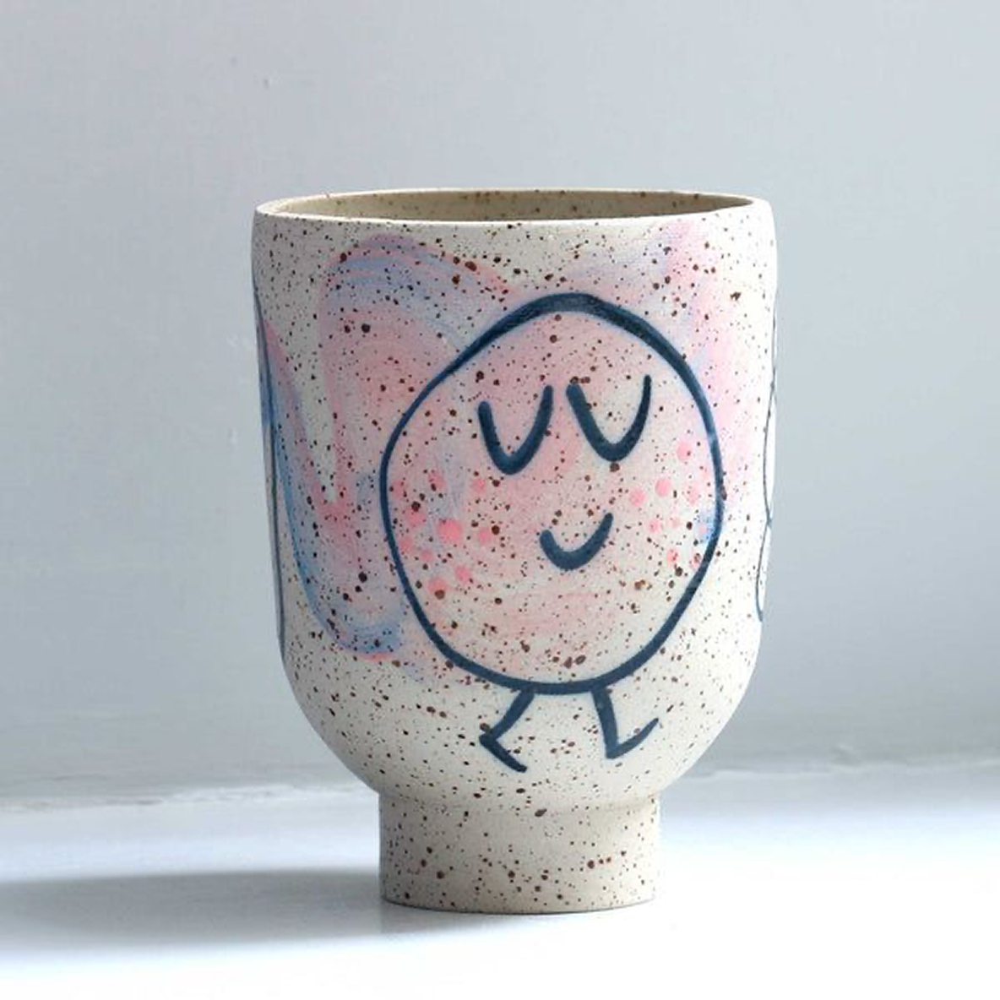
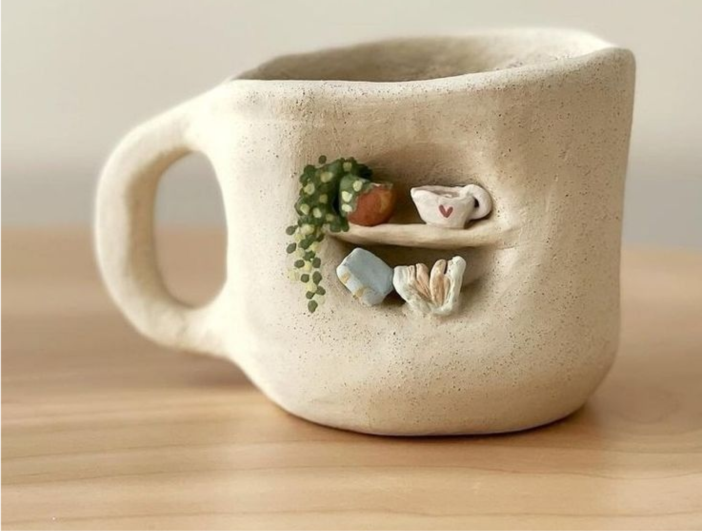
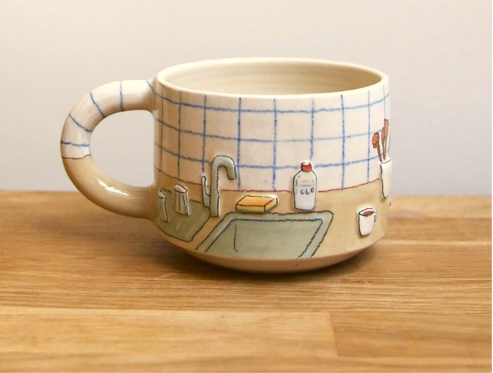
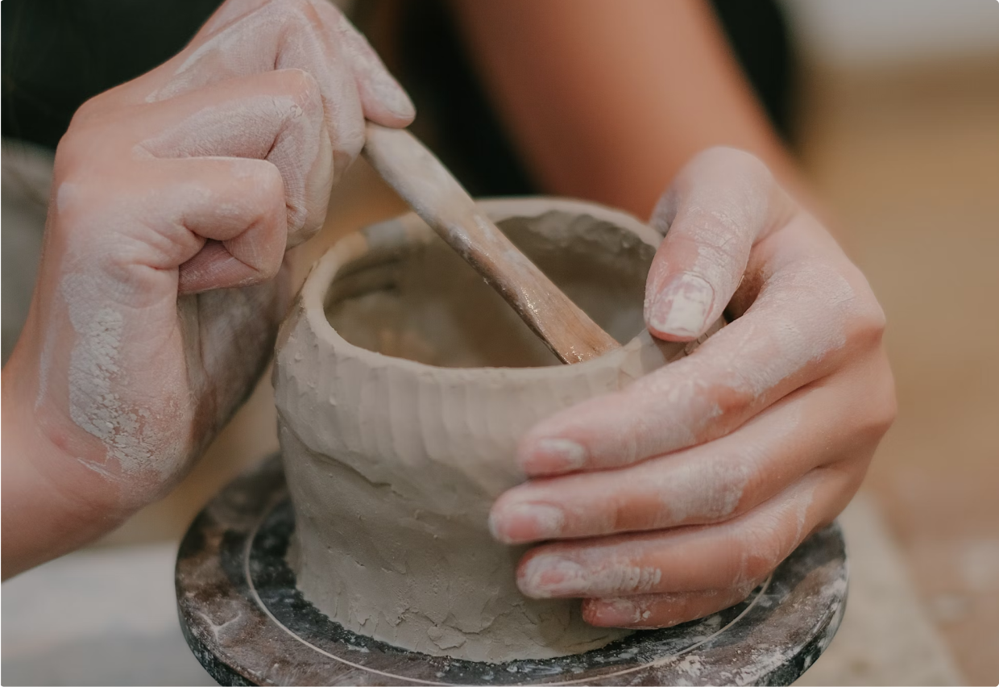

citations
All resources not made by us (Emily and Victoria) are cited here, by category.
typefaces
Abbink, Mike. Designer. (2017). IBM Plex Mono [Font]. Retrieved from https://fonts.google.com/specimen/IBM+Plex+Mono
Triay, Mathieu. Designer. (1989). Bricolage Grotesque [Font]. Retrieved from https://fonts.google.com/specimen/Bricolage+Grotesque
images and icons

Image retrieved from https://in.pinterest.com/pin/8373949303076688/

Image retrieved from https://in.pinterest.com/pin/3096293490526751/

Image retrieved from https://in.pinterest.com/pin/378654281191119579/

Image retrieved from https://in.pinterest.com/pin/25332816647824633/

Image by cafeconcetto. Retrieved from https://unsplash.com/photos/a-group-of-pills-NENc84l109g

Image retrieved from https://ca.pinterest.com/pin/5488830792155228/

Image retrieved from https://ca.pinterest.com/pin/658792251779404878/

Image retrieved from https://ca.pinterest.com/pin/1196337403990933/

Image retrieved from https://ca.pinterest.com/pin/361695413826783200/

Image by Caleb Williams. Retrieved from https://unsplash.com/photos/a-woman-sitting-at-a-table-with-a-bowl-and-spoon-XRwHHcTSJUk

Image by Beyzanur K. Retrieved from https://unsplash.com/photos/a-woman-sitting-at-a-table-painting-a-cake-GFRHBe6bDnQ

Image by Pew Nguyen. Retrieved from https://unsplash.com/photos/a-woman-is-making-a-vase-out-of-clay-QTuikYkByFs
code references/tutorials
Accordion Element: https://www.w3schools.com/howto/howto_js_accordion.asp
Element Border Colour: https://www.w3schools.com/cssref/tryit.php?filename=trycss_border-color
Column Gap Property: https://www.w3schools.com/cssref/css3_pr_column-gap.php
Adding Space Bwt Elements: https://www.geeksforgeeks.org/how-to-add-space-between-elements/
Centering An Image: https://www.w3schools.com/howto/howto_css_image_center.asp
Grid-template-columns Property: https://www.w3schools.com/cssref/pr_grid-template-columns.php
Two Unequal Columns: https://www.w3schools.com/howto/tryit.asp?filename=tryhow_css_two_columns_unequal
Table Size: https://www.w3schools.com/css/css_table_size.asp
Image As A Link: https://www.w3schools.com/html/html_images.asp
Hyperlinks: https://www.w3schools.com/html/html_links.asp
CSS 'all' Property: https://www.w3schools.com/cssref/css3_pr_all.php#gsc.tab=0&gsc.q=!important
CSS '!important' Rule: https://www.w3schools.com/css/css_important.asp